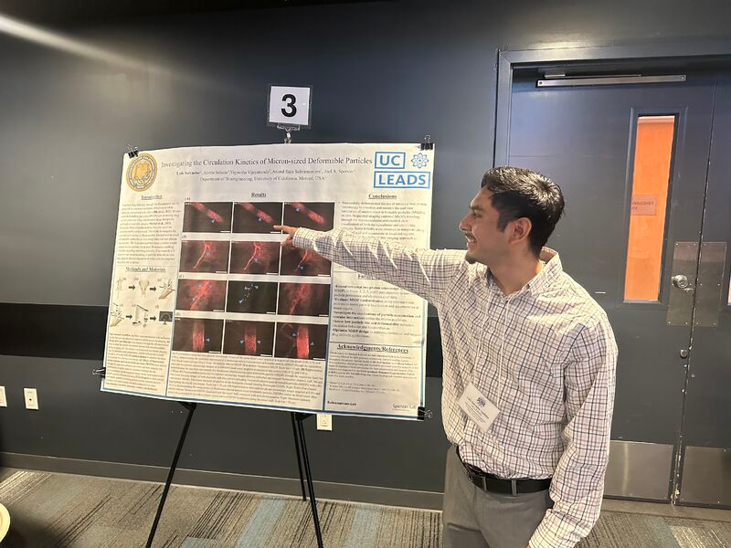
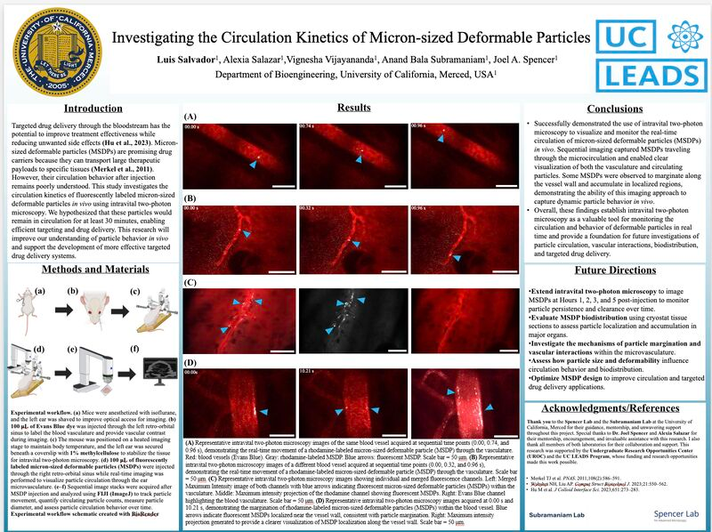

Research focus
The project examined the circulation kinetics of micron-sized deformable particles and how those particles behave within the circulatory system. Luis presented the work under the title “Investigating the Circulation Kinetics of Micron-sized Deformable Particles.”
Research environment
Luis gained hands-on biomedical engineering research experience as part of the Spencer Lab while contributing through collaboration with the Subramaniam Lab. The work was completed as summer undergraduate research and presented through UC Merced’s Undergraduate Research Opportunities Center.


Laboratory methods
The summer research experience developed practical skills across sample preparation, microscopy workflows, and research analysis.
- ProcessingTissue processing
- SectioningCytosectioning and slice collection
- Research workflowData collection and analysis